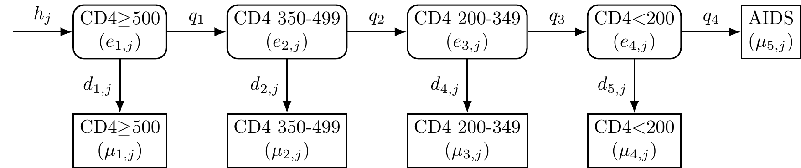
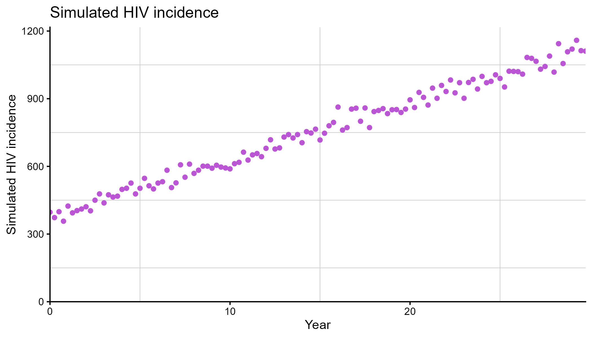
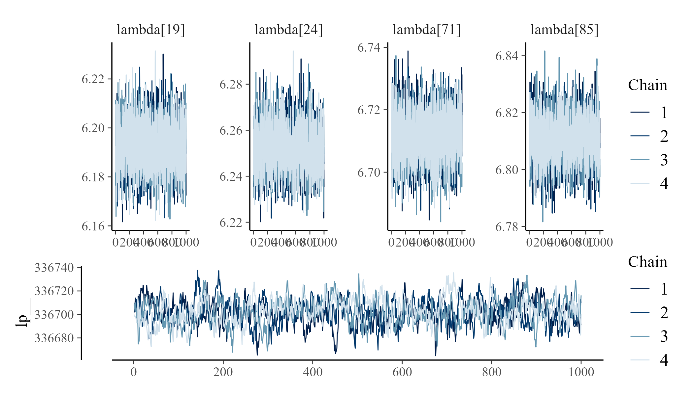
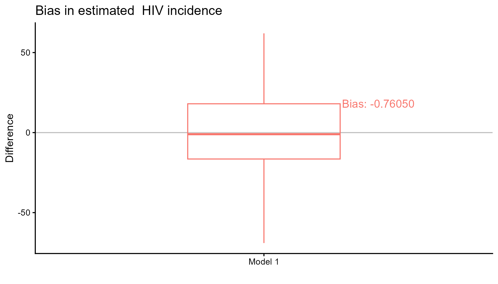
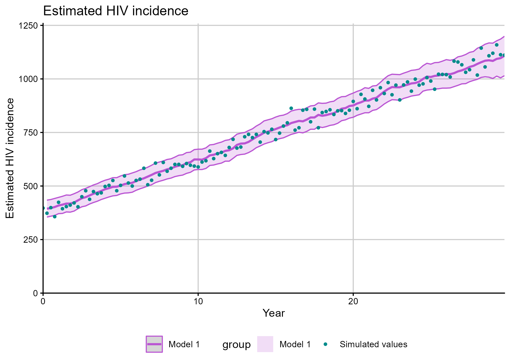

The cd4backcalc package provides a user-friendly way to perform Bayesian, discrete-time, multi-state modelling to estimate HIV incidence and undiagnosed HIV prevalence from diagnosis data.
Description
CD4 back-calculation is a discrete-time, multi-state Markov model used to represent HIV progression through different states until a diagnosis. The undiagnosed (latent) states in the model represent decreasing CD4 strata, and may include recent HIV acquisition (defined using RITA evidence), migration status, and age group. An illustration of the latent and diagnosed states in a CD4-staged back-calculation model is shown below.
Models are fitted within a Bayesian framework (using cmdstanr), with suitable prior distributions, to estimate HIV incidence and prevalence of undiagnosed HIV over time, as well as the probabilities of diagnosis in each CD4 state.

Figure: CD4-staged back-calculation model. The model compartments represent undiagnosed HIV (round boxes) and diagnosed HIV or AIDS (square boxes); the arrow represents HIV acquired at each time point (); HIV progression probabilities () vary by CD4 stratum; HIV diagnosis probabilities () vary by CD4 stratum and time.
Installation
Before installation you will need to set up a Personal Access Token (PAT) in Github with “Contents” and “Metadata” permissions for this repository. See here for instructions.
You can then install the development version of cd4backcalc with:
# install.packages(c("pak", "gitcreds"))
gitcreds::gitcreds_set() # set your PAT in the prompt
pak::pak("pkirwan/cd4backcalc")System requirements for installation
- The cd4backcalc package requires the R package cmdstanr (not available on CRAN) and the command-line interface to Stan, CmdStan. See instructions at: Getting started with CmdStanR.
- Windows users will additionally require Rtools to compile the Stan models, see: https://cran.r-project.org/bin/windows/Rtools/.
- MacOS users will require the correct GNU Fortran compiler, see: https://mac.r-project.org/tools/.
Usage
A basic workflow to simulate diagnosis data and fit the CD4-staged back-calculation model, check convergence and goodness of fit to the simulated data, and plot model estimates is shown in the example below.
library(cd4backcalc)
# simulate data under an increasing incidence scenario
sim_diags <- simulate_diagnoses(h_pattern = "increasing")
# visualise simulated data
plot_simulations(sim_diags, quantity = "incidence")
# run back-calculation model on simulated data
# default is 2000 iterations and 4 chains
hiv_list <- run_backcalc(sim_diags)
# check convergence
plot_diagnostics(hiv_list)
# check goodness of fit
bias_plot(hiv_list, quantity = "incidence")
# plot estimates compared to simulated values
plot_estimates(hiv_list, quantity = "incidence")
Supported models
The cd4backcalc package includes several pre-compiled models which can be used to fit the back-calculation model to real or simulated diagnosis data under different scenarios:
- Age-independent or age-dependent
- CD4-only or CD4 + RITA data
- With or without migration
The functions in the package are designed to work with all model variants, with the appropriate model selected based on user-specified options. The table below shows the options which should be used for each combination of RITA evidence, migration status, and age structure.
N.B. Due to the increased complexity, fitting times can be substantially longer when using the age-dependent models. On resource-constrained systems, “checkpointing” is available to fit these models to real data in stages, see the documentation for run_backcalc() for details.
| Model | Age-independent | Age-dependent |
|---|---|---|
| CD4 | rita = FALSE, migration = FALSE, age = FALSE | rita = FALSE, migration = FALSE, age = TRUE |
| CD4 + RITA | rita = TRUE, migration = FALSE, age = FALSE | rita = TRUE, migration = FALSE, age = TRUE |
| CD4 + Migration | rita = FALSE, migration = TRUE, age = FALSE | rita = FALSE, migration = TRUE, age = TRUE |
| CD4 + RITA + Migration | rita = TRUE, migration = TRUE, age = FALSE | rita = TRUE, migration = TRUE, age = TRUE |